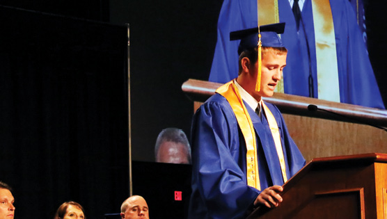

LEE-VE IT ALL BEHIND- Daniel Lee (‘15), class treasurer, informs the class and the rest of the audience of the class gift. The class of 2015 voted to use the money they had raised over the past four years to replace the sound system of the Football field with a newer, higher-quality one.
Waking up on graduation day is terrifying. Every senior knows that it’s the last day that he or she will ever be considered a high school student. After 7 years of seeing the same people, it’s daunting to think that graduation day is the last time the entire class of 2015 will be together, in the same room, in the same school. No matter how excited each person is to graduate and move on to bigger things, no one can help but feel a twinge of nostalgia the moment they enter the gym and realize that this - this understated gathering of parents in folding chairs and students in robes - is the end. “Waking up every morning and getting to spend eight hours a day with the people you love is something I will always cherish,” Michael Dobrzynski (‘15) recalled. “All of my friends... can’t believe how many memories we made.” When thinking back on graduation day, Grace Dunn (‘15) commented, “It was over. It was great to spend one last day with everyone, but then I realized. Seeing each other everyday? That wouldn’t happen anymore and it was sad.” After all, graduation day is the day that seniors become freshmen, high schoolers become college kids. “It was sad to think that at the end of the summer, I would be saying goodbye to everyone. I’ve been friends some people since second grade, and I watched them go off and start their new lives,” remembered Kaitlyn Peksa (‘15). Graduation day was the last day when the Class of 2015 were still seniors. It was the last time they would sit together as Brookfield Central students, as high schoolers. When the day was done, they would predict their future, see themselves moving on, and say goodbye to high school forever. // KENZI LEWIS
THE LAST SONG- The senior choir members, including Shea Singer (‘15), Dawid Krynicki (‘15), Natalie Hilmer (‘15), Jessica Richards (‘15) and Leah Peavler (‘15) sing their last song together as a high school choir.
#SELFIE- As class president Joey Baker (15’) stands in front of everyone giving his presidential declaration, many giggle and laugh as hundreds of selfies flip in the background. During graduation practice, Joey made a deal with Mr. Gruetzmacher, that if over 50% of the students tweeted a selfie then he would shave his head. Although the class exceeded their 50%, Mr. Gruetzmacher did not shave his head.
A senior’s perspective on graduation:
A SPEECH WORTH SMILING FOR- Lauren Chiang (‘15), the class’ vice president, smiles as she reviews the 2015 seniors’ greatest memories in her speech. Even though only a small percentage of the graduates spoke at the podium, the vast majority would agree that the words spoken reflected the entire class. “The speeches were the most unforgettable part of graduation,” David Smith (‘15) recalled.
STAND TALL- Lauren Chiang (‘15), Joey Baker (‘15), Cecilia Risch (‘15) and Jennifer Jarecki (‘15) along with Mr. Ron Blaha stand and wait for the precession across the stage to begin.